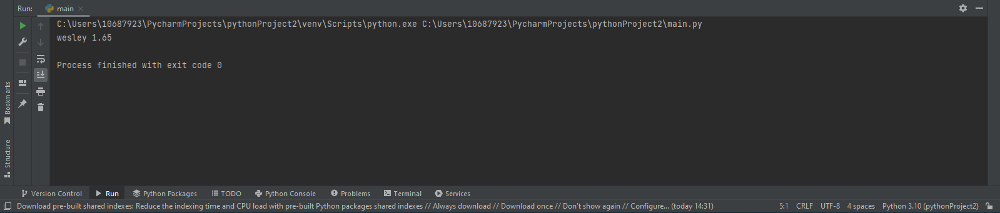
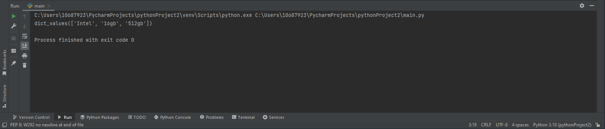
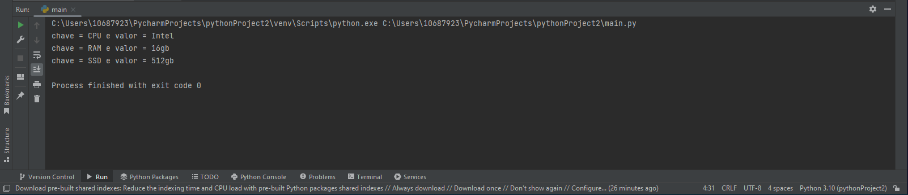
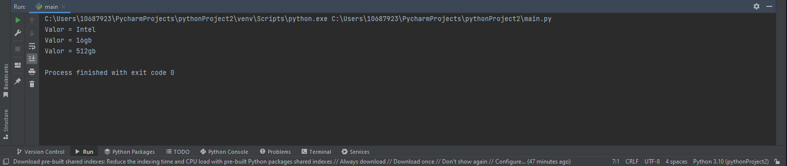
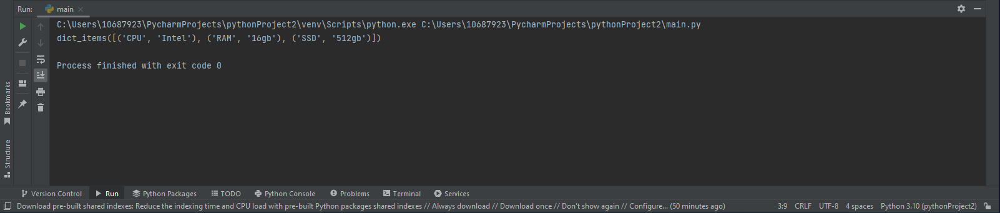
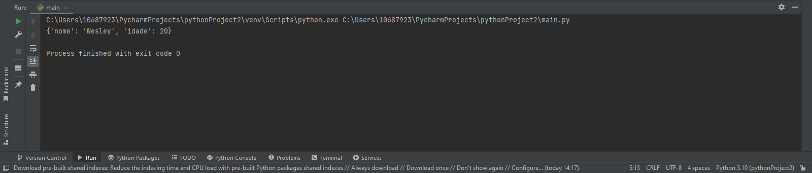
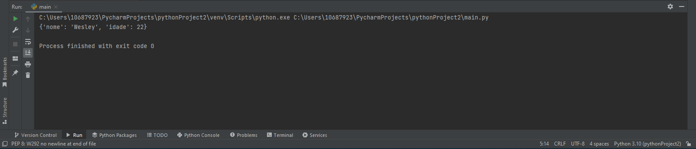

Acessando itens nos dicionários
para acerssarmos um item em específico em um dicionário podemos acessar por sua chave
pessoa = 'nome': 'Wesley', 'altura': 1.65, 'idade': 21
print(pessoa['nome'],
pessoa['altura'])
Resultado

pessoa = 'nome': 'Wesley', 'altura': 1.65, 'idade': 21
print(pessoa.get('nome'))
Resultado
Tendo chaves e valores
Para obtermos todas as chaves de um dicionário podemos usar o método keys()
pc = {'CPU': 'Intel', 'RAM': '16gb', 'SSD': '512gb'}
print(PC.keys())
Resultado
Mas ainda existem os valores das chaves, para conseguir somente eles ultilizamos o values():
pc = {'CPU': 'Intel', 'RAM': '16gb', 'SSD': '512gb'}
print(PC.values())
Resultado

Percorrendo os elementos dentro de um dicionário
Podemos percorrer os elementos de um Dicionário em usando suas chaves dict.keys() ou usando seus valores dict.values
dict.keys()
pc = {'CPU': 'Intel', 'RAM': '16gb', 'SSD': '512gb'}
for chave in
pc.keys():
print(f'chave =
{chave} e valor =
{pc[chave]}')
Resultado

dict.values()
pc = {'CPU': 'Intel', 'RAM': '16gb', 'SSD': '512gb'}
for valor in
pc.values():
print(f'Valor =
{valor}')
Resultado

Percorrendo as chaves e valores de um Dicionário
Uma maneira de obter chaves e valores é utilizando o método dict.items():
pc = {'CPU': 'Intel', 'RAM': '16gb', 'SSD': '512gb'}
print(pc.items())
Resultado

Uma maneira segura de acessar um elemento de um dicionário é verificando primeiro se a chave existe.
Exemplo
pc = {'CPU': 'Intel', 'RAM': '16gb', 'SSD': '512gb'}
if 'CPU' in pc:
print(f'Como a
chave desejada existe: {pc["CPU"]}')
Resultado
Adicionando e atualizando itens
A maneira mais simples de adicionar um item a um dicionario é criar uma nova chave e atribuir um valor. Assim:
nomes = {'nome': 'Wesley'}
nomes['idade'] = 20
print(nomes)
Resultado

Excluindo elementos no dicionário
Você pode excluir um elemento do dicionário com a keyword del do Python, especificando sua chave:
pessoa = {'nome': 'Wesley', 'idade': 22, 'altura':
1.85}
del pessoa['altura']
print(pessoa)
Resultado

Excluindo e retornando o elemento excluído
O método pop() remove o item cujo a chave foi especificada:
compras = {'maça': '2kg', 'ovos': '1
caixa', 'farinha': '2kg'}
ovos = compras.pop('ovos')
print(ovos)
print(compras)
Resultado